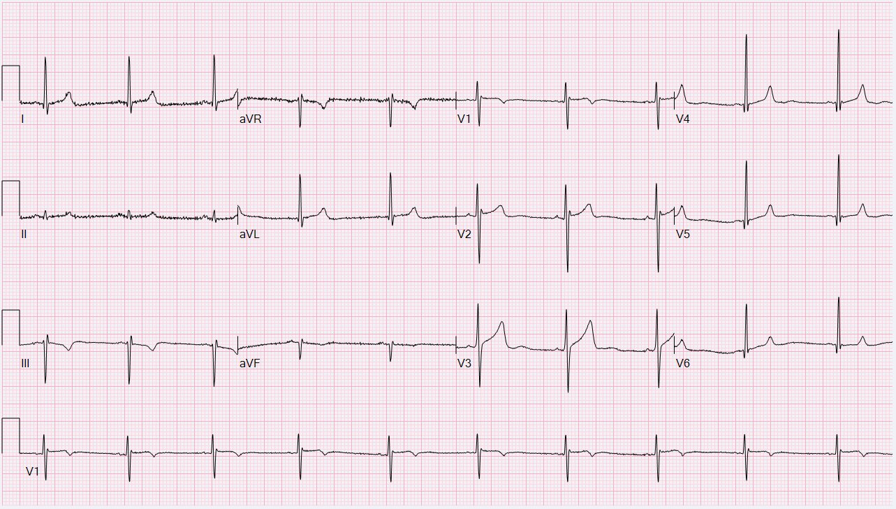
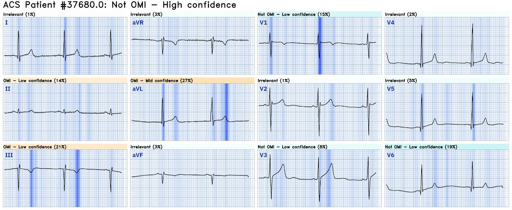
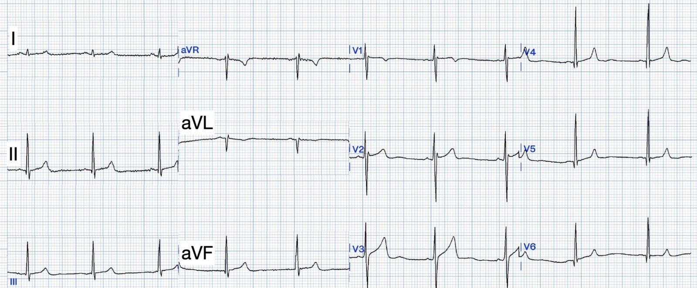
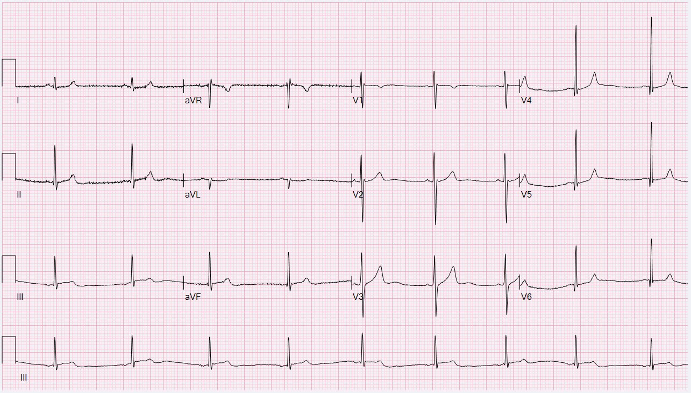
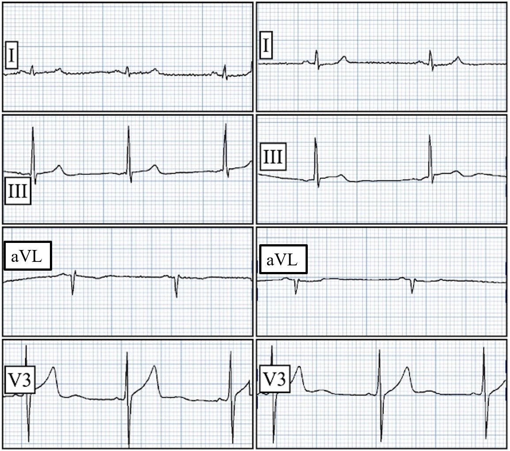
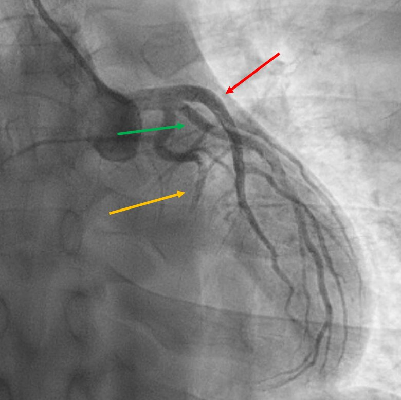
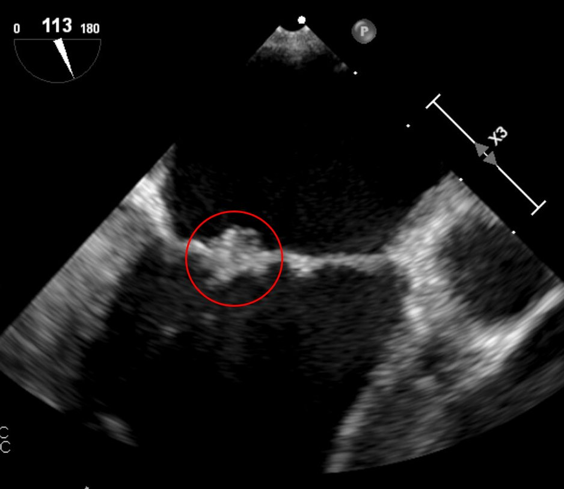
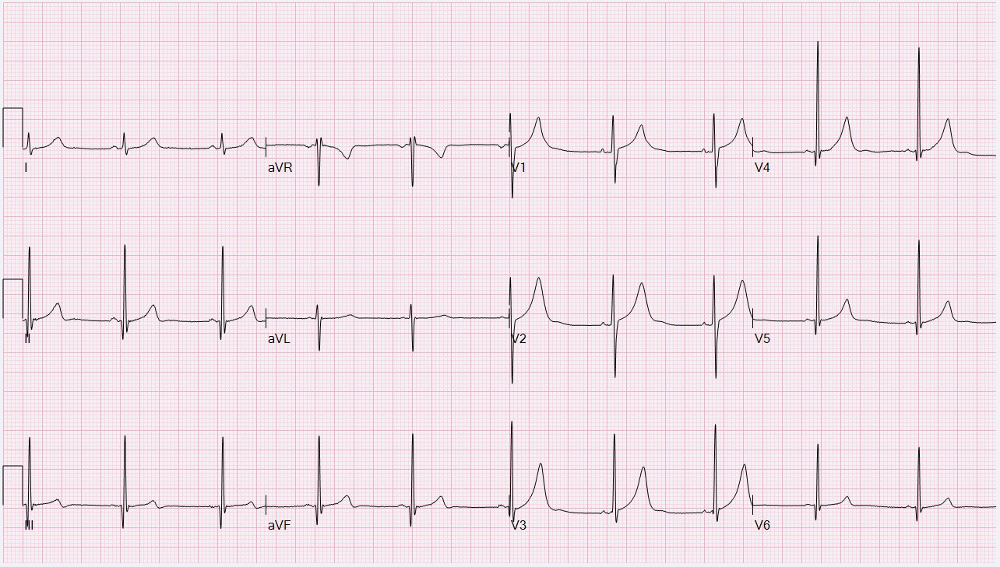

15/05/2024 — Đau ngực dữ dội như bị đè nghiến mà không thấy OMI trên điện tâm đồ? Cứ cho morphine là xong, phải không?
Bản dịch tiếng Việt của bài "Crushing Chest Pain and Can’t see OMI on the ECG? Just give morphine, right?" – Dr. Smith’s ECG Blog. Giữ nguyên toàn bộ 8 hình ảnh và 3 video của bản gốc.
Gửi ẩn danh, viết bởi Willy Frick
Một người đàn ông cuối độ tuổi 30, tiền sử hút thuốc 10 gói-năm, đến khám vì cảm giác đè nặng sau xương ức cấp tính lan lên vai trái, kèm buồn nôn, nôn và vã mồ hôi, khởi phát đột ngột khi anh đang chuẩn bị đi làm. Anh mô tả cảm giác như “một chiếc xe ủi đè trên ngực [anh].” Anh đánh giá cường độ đau 10/10.
Không cần thêm thông tin nào khác, bệnh sử (HPI) đã xếp bệnh nhân này vào nhóm có xác suất tiền nghiệm OMI rất cao.
Điện tâm đồ 1


Bạn nghĩ gì về điện tâm đồ lúc nhập viện của anh?
Kết quả đọc của Queen of Hearts kèm khả năng giải thích:


Dù không thể nhận ra chỉ từ riêng điện tâm đồ này, thực ra ở đây có đảo điện cực LA-LL. Đảo điện cực LA-LL thường được nhận ra nhờ sóng P ở chuyển đạo I lớn hơn ở chuyển đạo II. Trong ca này, điều đó chỉ rõ ràng khi so sánh với các điện tâm đồ sau. Đảo điện cực LA-LL gây ra những thay đổi sau:
- I và II đổi chỗ cho nhau
- aVL và aVF đổi chỗ cho nhau
- III bị đảo ngược
Dưới đây là hình ảnh sau khi đã chỉnh lại.
Điện tâm đồ 1 (đã chỉnh lại)


Hãy nhớ rằng với bệnh nhân có xác suất tiền nghiệm OMI rất cao, bạn phải loại trừ OMI bất kể điện tâm đồ thế nào. Hãy nhớ rằng hướng dẫn của châu Âu khuyến cáo chụp mạch vành ngay lập tức cho đau ngực kháng trị. Hãy nhớ rằng những bệnh nhân như vậy THỰC SỰ được điều trị phù hợp hướng dẫn chỉ 6,4% số trường hợp.
Biết rằng bệnh nhân nhiều khả năng đang bị OMI, chúng ta thấy những gì có thể là sóng T tối cấp ở thành dưới. Một manh mối còn mạnh hơn là ST chênh xuống dốc xuống cực kỳ kín đáo ở aVL. Tôi không nghĩ có ai có thể gọi điện tâm đồ này là chẩn đoán OMI. Nhưng nó rất đáng nghi. Lúc này bệnh nhân vẫn còn ở phòng chờ. Chưa lấy xét nghiệm nào, nhưng anh được ghi lại điện tâm đồ sau đây, 25 phút sau bản đầu tiên.
Điện tâm đồ 2, t + 25 phút


Bạn nghĩ sao?
Dưới đây là một số chuyển đạo then chốt đặt cạnh nhau để so sánh liên tiếp, điện tâm đồ 1 (đã chỉnh lại) bên trái, điện tâm đồ 2 bên phải.


Chúng ta nhận thấy các thay đổi sau:
- Đảo điện cực LA-LL đã được chỉnh lại (dù cũng hợp lý nếu tự hỏi liệu bản này mới thực sự là bản ghi bị đảo điện cực, vì sóng P ở chuyển đạo I lớn hơn ở chuyển đạo II).
- ST chênh lên (STE) ở III nhiều hơn một chút.
- ST chênh xuống (STD) kín đáo ở aVL rõ hơn một chút. Đáng lo ngại hơn nữa, nó có dạng vòm (đảo ngược), rất đáng nghi thiếu máu cục bộ.
- Chuyển đạo I cũng bắt đầu có ST chênh xuống soi gương.
- Điểm J ở V3, trước đó chênh lên khoảng 1,5 mm (là bình thường), nay lại đẳng điện một cách bất thường. Nói cách khác, nay nó chênh xuống một cách tương đối, gợi ý lan rộng ra thành sau.
Ca bệnh tiếp diễn
Thật không may, những thay đổi này không được nhận ra, và bệnh nhân tiếp tục ở phòng chờ trong vài giờ tiếp theo. Troponin I độ nhạy cao lấy vào khoảng thời điểm ghi điện tâm đồ 2 là 13 ng/L (tham chiếu ≤ 35). Troponin lặp lại khoảng hai giờ sau là 44 ng/L. Điều này xác nhận chẩn đoán nhồi máu cơ tim, vốn đòi hỏi 1. troponin tăng động học (dynamic), và 2. dấu hiệu hoặc triệu chứng thiếu máu cục bộ.
Tôi đã gửi điện tâm đồ thứ 2 này cho nhóm “ECG Nerdz” của chúng tôi mà không kèm bất kỳ thông tin lâm sàng nào, và câu trả lời lập tức là “OMI thành dưới”
Thật không may, dù điện tâm đồ có giá trị chẩn đoán, trong ca này Queen of Hearts lại kết luận “Not OMI with High Confidence” (Không phải OMI, độ tin cậy cao)
Bệnh nhân được đưa vào buồng khám lúc t + 4 giờ. Bác sĩ khoa cấp cứu (ED) ghi nhận bệnh nhân than đau ngực 8/10. Ghi chép của bác sĩ cấp cứu có phần chẩn đoán phân biệt, trong đó hội chứng vành cấp (ACS) được liệt kê là khả năng đầu tiên. Bệnh nhân được dùng famotidine 20 mg tĩnh mạch, morphine 4 mg tĩnh mạch và nitroglycerin ngậm dưới lưỡi. Cho morphine khi nghi ACS mà không kích hoạt phòng thông tim cũng giống như tháo pin khỏi máy báo khí CO đang kêu rồi tiếp tục ở lại trong nhà.
Bệnh nhân được chụp CT mạch máu để loại trừ bóc tách động mạch chủ. Những độc giả tinh mắt có thể nhận ra một điều mà bác sĩ chẩn đoán hình ảnh đã bỏ sót. (Đáp án ở cuối ca.)
hsTnI lặp lại lúc t + 5 giờ là 244 ng/L, lúc đó chuyên khoa tim mạch được mời hội chẩn. Sau khi khám bệnh nhân vẫn đang còn đau, bác sĩ tim mạch đề nghị nhập viện và lên kế hoạch thông tim sau dịp cuối tuần. (Lúc đó là chiều thứ Sáu.) Lần troponin thứ tư lúc t + 6 giờ là 608 ng/L.
Khoảng thời gian này, bệnh nhân được chuyển từ nhóm hội chẩn tim mạch sang nhóm tiếp nhận nhập viện.
Bác sĩ tim mạch của nhóm tiếp nhận nhập viện là một độc giả của Dr. Smith’s ECG Blog. Khi nghe về ca này, anh lập tức đến khám bệnh nhân, và bệnh nhân cho biết vẫn đau ngực dữ dội, kéo dài. Ngay lúc đó, bác sĩ tim mạch kích hoạt phòng thông tim. Hình chụp mạch vành của anh được trình bày dưới đây:
Đây là một khung hình tĩnh tiêu biểu. Đầu mũi tên đỏ chỉ vào LAD, mũi tên xanh lá chỉ vào một nhánh bờ tù OM xuất phát rất cao (hoặc nhánh trung gian (ramus intermedius) nếu bạn muốn gọi vậy), và mũi tên cam chỉ vào LCx.


Bác sĩ tim mạch ghi nhận rằng, ngoài chỗ tắc ở đoạn giữa động mạch mũ trái với dòng chảy TIMI 0 (nghĩa là hoàn toàn không có dòng chảy phía sau chỗ tắc), các động mạch vành còn lại có vẻ bình thường. Sau khi hút huyết khối, anh xác nhận không có mảng xơ vữa mạch vành bằng siêu âm trong lòng mạch (IVUS). Vì vậy anh không đặt stent.
Sau PCI, troponin tăng từ 608 lên 37.186 ng/L, một ổ nhồi máu rất lớn. Siêu âm tim cho thấy LVEF 42%, vô động thành dưới, giảm động thành dưới-bên, khiến bệnh nhân này bị suy tim khi mới ở độ tuổi 30.
Thời gian từ cửa đến bóng (door-to-balloon) là 10 giờ 50 phút. Bệnh nhân bị nhồi máu thành dưới và thành dưới-bên ngay tại khoa cấp cứu của một bệnh viện có phòng thông tim.
Bệnh nhân được khảo sát tìm nguồn thuyên tắc.
Dưới đây là siêu âm tim qua thực quản (TEE), mặt cắt 2 buồng giữa thực quản, phóng to vào van hai lá.
Đây là một khung hình tĩnh với vòng tròn đỏ cho thấy một khối đáng nghi là sùi.


Chụp X-quang răng cho thấy sâu răng và mất răng. Mọi mẫu cấy máu và xét nghiệm huyết thanh đều âm tính, và bệnh nhân được điều trị 6 tuần bằng kháng sinh phổ rộng cho viêm nội tâm mạc cấy máu âm tính.
Điện tâm đồ 3 được ghi 2 ngày sau PCI


Chúng ta thấy những điểm sau:
- Sóng Q mới ở thành dưới
- Sóng T đảo ngược (TWI) phần cuối ở III và aVF do tái tưới máu
- Sóng T rất cao, rõ nhất ở V1-V4, soi gương với sóng T đảo ngược ở thành sau (tức là sóng T tái tưới máu thành sau)
Những điểm cần học:
- OMI là một chẩn đoán lâm sàng.
- Một điện tâm đồ “âm tính” không loại trừ OMI.
- Troponin bình thường không loại trừ OMI.
- Troponin có thể tăng rất chậm trong OMI. Troponin bị “mắc kẹt” trong vùng cơ tim thiếu máu cục bộ. Có thể lần đầu bạn chỉ thấy troponin tăng vọt sau tái tưới máu.
- Thực ra phim CT mạch máu (CTA) trong ca này đã cho thấy OMI. Lưu ý rằng thành dưới-sau không ngấm thuốc cản quang.
- Đau ngực kháng trị với điều trị nội khoa cần chụp mạch vành ngay lập tức.
- Ở bệnh nhân này, chẩn đoán đã rõ ràng ngay từ biểu hiện lúc đến khám, nhưng các bác sĩ khám cho anh lại bị điện tâm đồ và troponin trấn an một cách sai lầm.